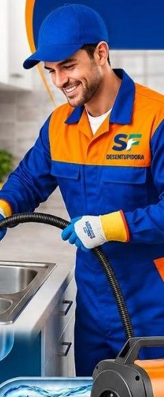
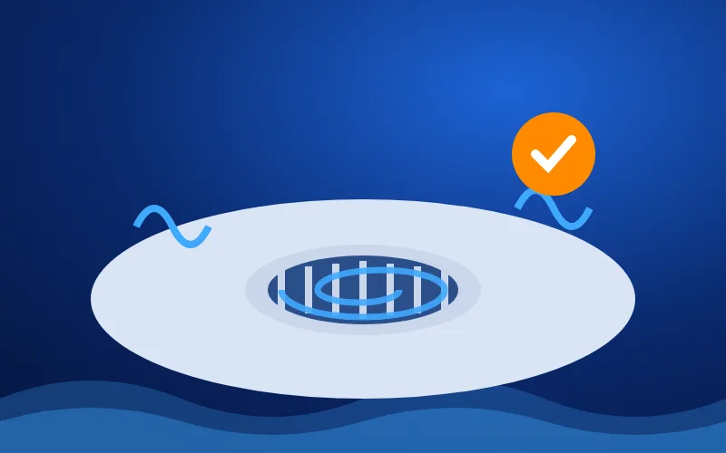
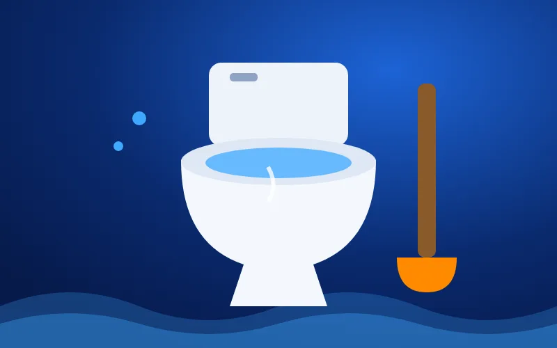
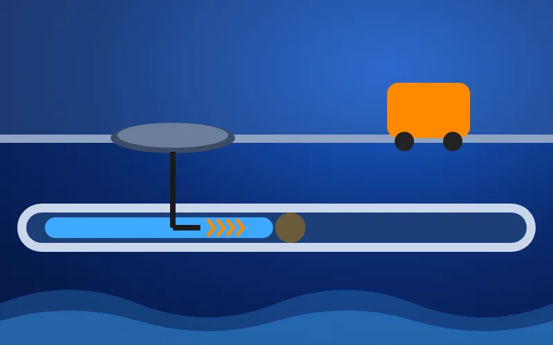
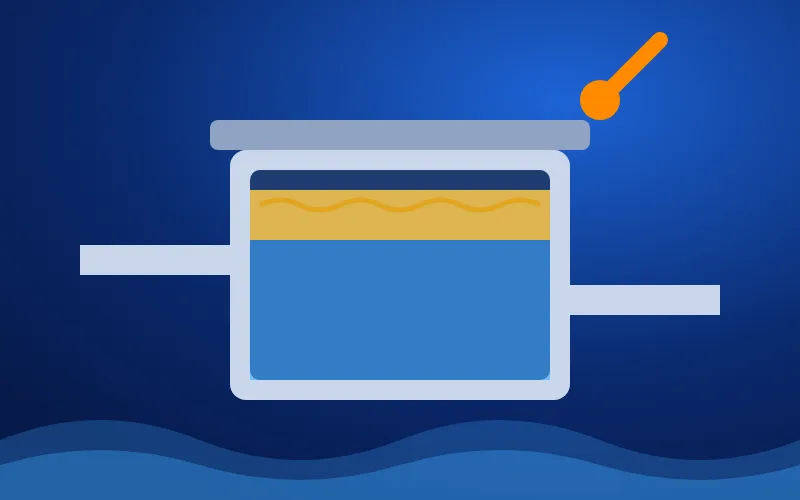
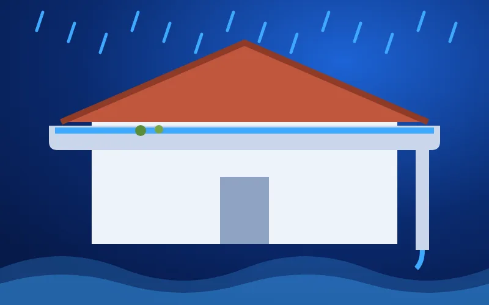
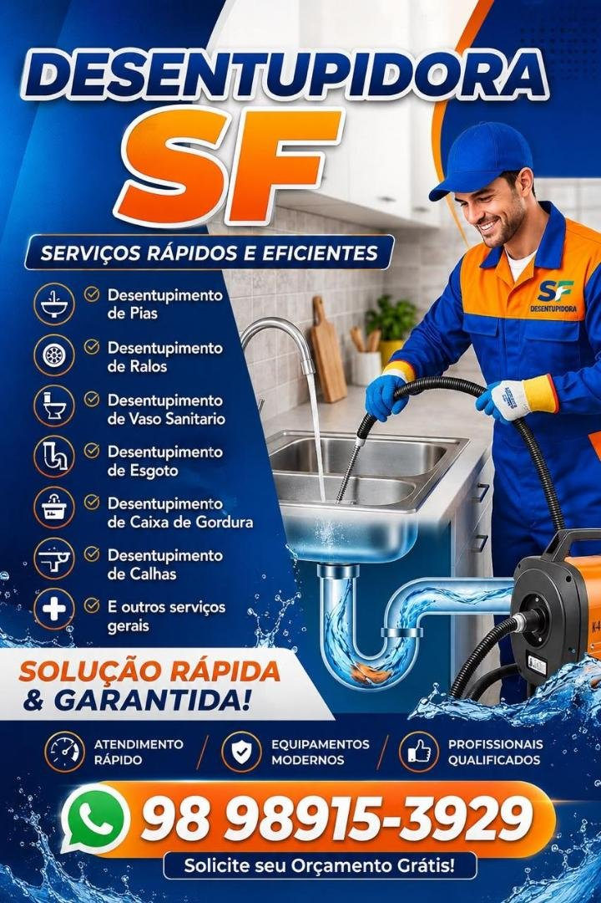
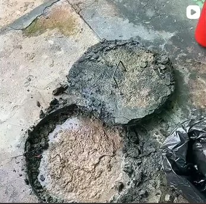

Desentupimento de pia
Pia da cozinha ou do banheiro com água parada ou descendo devagar? Removemos gordura e resíduos sem desmontar a bancada.
Pedir orçamento →Pia, ralo, vaso sanitário, esgoto, caixa de gordura e calhas. Equipamento profissional, atendimento rápido e serviço garantido.

Atendemos residências, condomínios, restaurantes e empresas em São Luís com máquinas desentupidoras modernas.
Pia da cozinha ou do banheiro com água parada ou descendo devagar? Removemos gordura e resíduos sem desmontar a bancada.
Pedir orçamento →
Ralo de banheiro, área de serviço e quintal. Acabamos com o retorno de água e o mau cheiro.
Pedir orçamento →
Vaso entupido ou transbordando? Desentupimos sem retirar a louça na maioria dos casos.
Pedir orçamento →
Rede de esgoto e tubulações entupidas, com máquina de cabo rotativo que alcança longas distâncias.
Pedir orçamento →
Limpeza e desentupimento de caixa de gordura para casas, restaurantes e condomínios.
Pedir orçamento →
Calhas e condutores livres de folhas e sujeira, para a chuva de São Luís não virar infiltração.
Pedir orçamento →Mande uma foto ou vídeo do problema e receba o orçamento grátis.
Pelo WhatsApp ou ligação, contando o que entupiu.
Com foto ou vídeo, você recebe o valor sem compromisso.
Técnico no seu endereço com o equipamento certo.
Teste na hora e orientação para não entupir de novo.

Desentupir não precisa virar obra. Com equipamento profissional, o serviço é limpo, rápido e sem estragar o seu piso.
Atendemos São Luís, São José de Ribamar, Paço do Lumiar e Raposa. Alguns dos bairros:
Não achou seu bairro? Pergunte no WhatsApp.
Alguns cuidados simples fazem a tubulação durar muito mais.

Guarde em uma garrafa e leve a um ponto de coleta. A gordura endurece no cano.
Papel, absorvente, fio dental e lenço umedecido vão no lixo, nunca no vaso.
Ela segura cabelo e resíduos antes que formem uma bola no cano.
Em casas, a cada poucos meses; em restaurantes, com mais frequência.
Na maioria dos casos, não. Usamos máquinas desentupidoras com cabos e molas que chegam ao ponto do entupimento pela própria tubulação, sem quebra-quebra.
Sim. Mande uma mensagem no WhatsApp (98) 98915-3929 contando o problema e, se puder, uma foto ou vídeo. Você recebe o orçamento sem compromisso.
Atendemos São Luís e a Grande Ilha: São José de Ribamar, Paço do Lumiar e Raposa. Pergunte pelo WhatsApp se atendemos o seu endereço.
Sim. Atendemos residências, condomínios, restaurantes, lojas e empresas.
Não jogue óleo, restos de comida, cabelo, papel ou lenço umedecido nos ralos e vasos, use ralos com tela e faça a limpeza periódica da caixa de gordura.
Fale agora com a Desentupidora SF: (98) 98915-3929